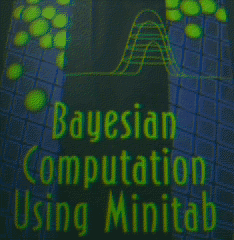

Bayesian Computation
Using Minitab
By Jim Albert
Wadsworth Publishing Company, 1996
ISBN #: 0-534-51781-1
This book is a package and description of Minitab macros to introduce Bayesian statistical inference.
Click here
if you want to see the preface of the book.
Click here
if you want to see a listing of the Minitab macros with sample output.
Click here
NEW! Toolbox of Minitab "local" macros
Click here
if you want to see a list of errata.
Click here
for information on ordering.
Any questions or comments about the book or software should be directed to
albert@math.bgsu.edu
These macros can be used with
The Student Edition of MINITAB for Windows